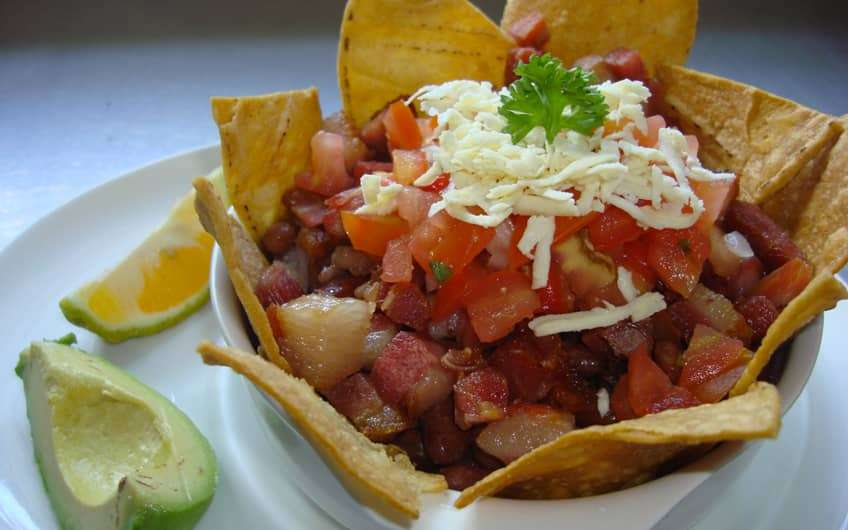

Culture
üçõ Traditional Cuisine



üèõÔ∏è Museums of Costa Rica
üé≠ Cultural Experiences
Events: Check live music, theater, and cultural events on the official agenda: Ministry of Culture Agenda
Restaurants: Enjoy local flavors at Soda Tapia or Soda La Victoria
Tours:
- Don Guelo’s Farm Tour – Uvita
- Whale Tail Walk – Uvita
- Community Walking Tour – Bahía Ballena
- Coconut Tour with David – Uvita
- Sugar Cane Tour with Ademar – Uvita
- Gallo’s Integral Farm Tour – Uvita
- Rainforest Chocolate Tour – La Fortuna
- Café Britt Coffee Tour – Heredia
- Cultural Experience Tour – Diamante Eco Park
- Cultural Highlands Tour – Finca Rosa Blanca